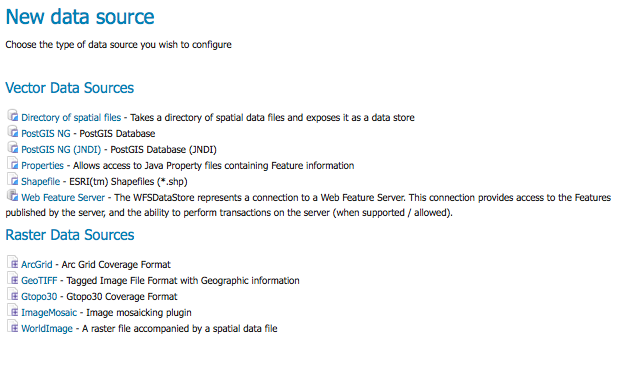
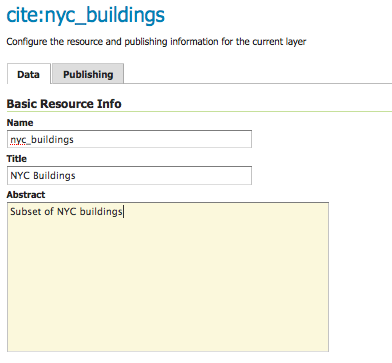
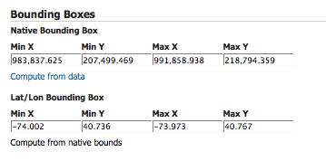

Publishing a PostGIS Table¶
This tutorial walks through the steps of publishing a PostGIS table with GeoServer.
Note
This tutorial assumes that GeoServer is running at http://localhost:8080/geoserver.
Note
This tutorial assumes PostGIS has been previously installed on the system.
Getting Started¶
Download the zip file nyc_buildings.zip. It contains a PostGIS dump of a dataset of buildings from New York City that will be used during in this tutorial.
Create a PostGIS database called “nyc”. This can be done with the following command line:
createdb -T template_postgis nyc
If the PostGIS install is not set up with the “postgis_template” then the following sequence of commands will perform the equivalent:
...Unzip nyc_buildings.zip to some location on the file system. This will result in the file nyc_buildings.sql.
Import nyc_buildings.sql into the nyc database:
psql -f nyc_buildings.sql nyc
Create a Data Store¶
The first step is to create a data store for the PostGIS database “nyc”. The data store tells GeoServer how to connect to the database.
In a web browser navigate to http://localhost:8080/geoserver.
Navigate to Data‣Stores.
Adding a New Data Source
Create a new data store by clicking the PostGIS NG link.
Enter the Basic Store Info. Keep the default Workspace, and enter the Data Source Name as nyc_buildings and a brief Description.

Basic Store Info
Specify the PostGIS database Connection Parameters
dbtype
postgisng
host
localhost
post
5432
database
nyc
schema
public
user
postgres
passwd
enter postgres password
validate connections
enable with check box
Note
The username and password parameters are specific to the user who created the postgis database. Depending on how PostgreSQL is configured the password parameter may be unnecessary.

Connection Parameters
Click Save.
Create a Layer¶
Navigate to Data‣Layers.
Click Add a new resource.
From the New Layer chooser drop-down menu, select cite:nyc_buidings.

New Layer drop down selection
On the resulting layer row, select the layer name nyc_buildings.

New Layer row
The Edit Layer page defines the Data and Publishing parameters for a layer. Enter a short Title and an Abstract for the nyc_buildings layer.
Basic Resource Info
Generate the layer’s bounding boxes by clicking the Compute from data and then Compute from Native bounds.
Generate Bounding Boxes
Set the layer’s style by switching to the Publishing tab.
Select the polygon style from the Default Style drop down list.

Select Default Style
Finalize the layer configuration by scrolling to the bottom of the page and clicking Save.
Preview the Layer¶
In order to verify that the nyc_buildings layer is published correctly you can preview the layer. Navigate to the Layer Preview screen and find the cite:nyc_buildings layer.

Layer Preview
Click on the OpenLayers link in the Common Formats column.
Success! An OpenLayers map loads in a new page and displays the layer data with the default polygon style. You can use the Preview Map to zoom and pan around the dataset, as well as display the attributes of features.

Preview map of nyc_buildings